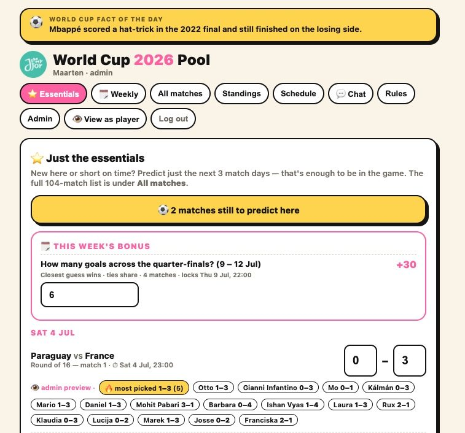
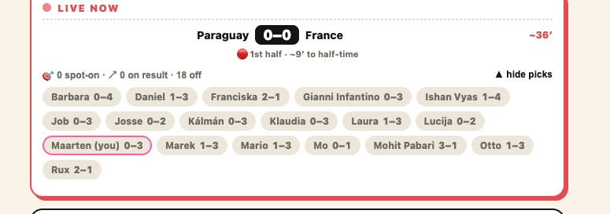
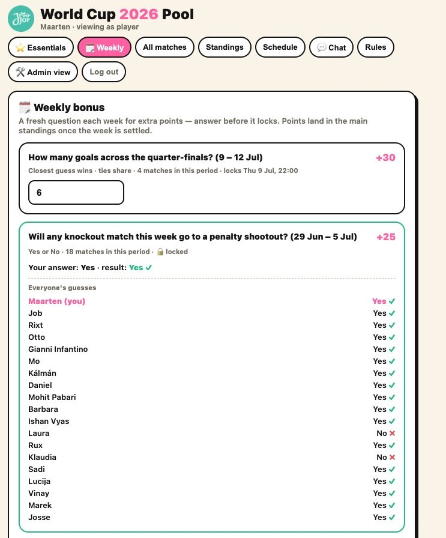
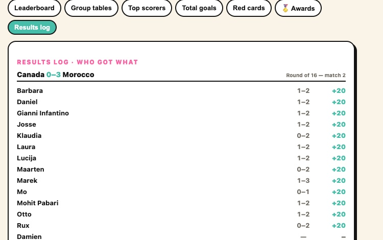
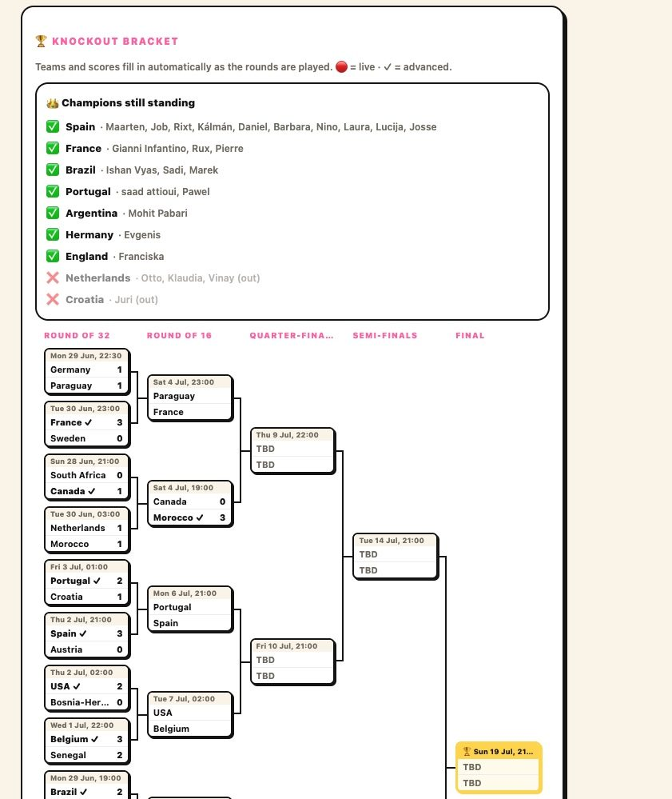

The problem
Every tournament, the office wants a prediction pool. The default option, Scorito, charges around €200 per group for the features that make it fun, and even then you're locked into their scoring and their UI. I figured a World Cup pool is really just three things: collect predictions, pull in live results, and rank everyone. That sounded like a weekend project. It turned out to be closer to an hour.
What I built
A full prediction pool for the 104-match World Cup, free and ad-free, that 30 colleagues now use:
- Predict every match, or just the next three match days if you're short on time. The "essentials" view lowers the barrier for casual players.
- Live everything. Scores, match minutes and goalscorers auto-import from a public football API, and the leaderboard reshuffles in real time during matches.
- Weekly bonus rounds and closest-guess metagames (like "how many goals across the quarter-finals?") that keep people coming back between their own matches.
- Fully customizable scoring: spot-on vs. correct-result points and bonuses, all tweakable by the admin.
- Admin plus "view as player" so I can run the pool and still see exactly what everyone else sees.


How it works
The whole thing is serverless, with no database. A React + Vite frontend talks to Netlify Functions for logic and Netlify Blobs for storage, so predictions, scoring config and standings all live as blobs. Live match data is pulled from a public football API and cached, so the leaderboard can recompute on every score change without hammering the source. No servers to babysit, no database to migrate, and it costs effectively nothing to run.

The knockout bracket fills itself in as rounds are played, and tracks which players still have their champion pick alive:

Results
The point wasn't to beat Scorito on features. It was to prove that a focused build ships in an afternoon and does exactly what the office needs, for free. Execution over perfection: it went live, people played, and it's been running through the tournament ever since.